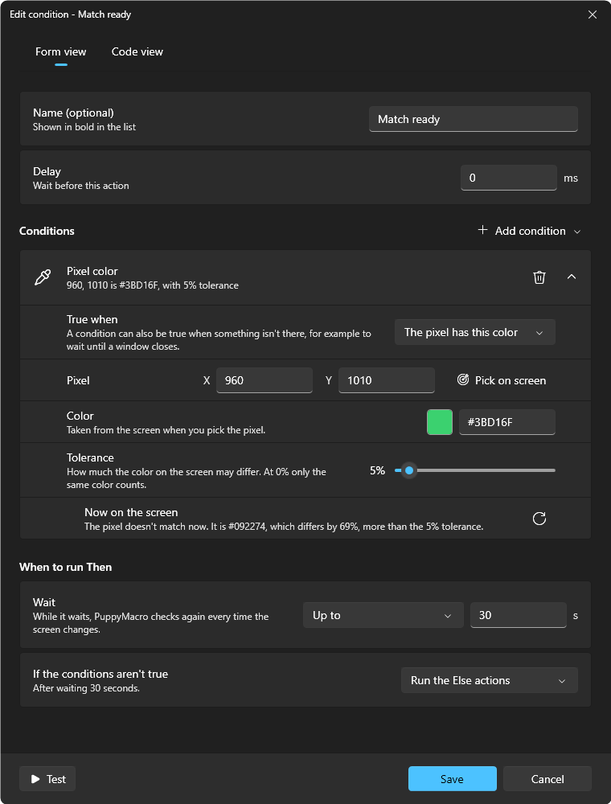

A macro can look at the screen before it goes on: an If checks one or more conditions, waits for them as you choose, then plays the actions in its Then, or the actions in its Else, or stops the macro. A click inside Then can go where an image or a text was found, wherever it is that time.

A condition says what PuppyMacro sees now, as you change it.
Add a condition
In the macro editor, select where the If goes (as for a new action), then select Condition (the + button next to Action) and choose Pixel color, Image on screen or Text on screen (OCR).
The condition window opens with that condition. Pick the pixel, take the image or write the text (below), then choose when to run Then.
Select Save. In the list, the If is a row with Then under it (and Else when the If runs it). Select Then or Else and add actions: they go at its end. You can also drag actions onto them. Alt+Up / Alt+Down at the top or bottom of a Then or Else move the actions out of it, and pass over an If instead of entering it.
Edit, or a double-click on the If or on its Then or Else, opens the condition window again. Add condition in that window adds more conditions to the same If, and each one has Remove condition. An If can be inside another If's Then or Else, and groups work inside them too.
The conditions
Pixel color: the color of one point of the screen. Pick on screen shows a still picture of the screen with the pixels around the pointer enlarged: click the pixel, and its position and color are taken. Tolerance is how much red, green and blue may each differ (5% by default; at 0% only the same color counts).
Image on screen: a picture to find. Take on screen shows a still picture of the screen: drag around the image (a button or an icon works best: small, and only what always looks the same), then Take image; Retry removes the rectangle so you can drag again on the same picture. Take another image adds more pictures: the condition is true when one of them is on the screen (for example the same button lit and unlit). Similarity is how closely the screen must look like the image (90% by default; lower it a little when light or effects change it). A little bigger or smaller also finds the image from 85% to 115% of its size, and takes longer.
Text on screen: words, read with Windows' own text recognition, in a Language Windows can read on the PC (Windows language by default; add others in Windows Settings > Time & language > Language & region). Match: Contains the text (also inside longer words) or Exactly these words; Match uppercase and lowercase. Spaces and the punctuation around words do not count. It is slower than an image: use it when the words stay the same but their font, color or background change, and keep the search area small.
Image and Text conditions have a Name (for example Accept button), which the actions in Then use. Two conditions of one macro cannot have the same name.
Where to look
Search area of an image: Around where it was taken (the default: the place it was taken, larger by the image's size on every side, so it still finds the image if it moves a little; the fastest), The whole screen (the monitor where it was taken) or An area I draw (Draw on screen: drag the area, then Use this area, or Retry to drag again). A text has The whole screen or An area I draw.
When the image or text is found more than once, the most similar one counts; equally similar, the highest on the screen, then the one most to the left.
PuppyMacro sees the screen as it is shown, also with HDR on: an image taken with HDR off is found with HDR on, and the other way round. Take the image again after changing the screen's resolution or scale, or the app's size.
The mouse pointer is not part of what PuppyMacro sees, but anything the app draws under the pointer (a highlight, a tooltip) is. If the pointer can cover what a condition looks for, add a Move to elsewhere before the If.
While a condition looks at the screen, PuppyMacro's own windows are left out of what it sees (on Windows 10 version 2004 or later), and so out of your own screenshots and recordings in that moment and for a few seconds after.
When to run Then
Conditions (with more than one): All of them are true or One of them is true.
Wait: Check once, Up to a number of seconds, or As long as it takes (until the conditions are true or you stop the macro). While it waits, PuppyMacro checks again every time the screen changes. The macro's Speed does not change the wait.
If the conditions aren't true: Run the Else actions or Stop the macro.
Each condition has Now on the screen, which says what PuppyMacro sees a moment after you change it: Found now at 1812, 1210, 97% similar, how far the pixel's color is, or what text it read. Opening a condition does not check it: until then the card says Not checked yet. Check again (its ⟳ button) checks that condition on the screen as it is now, and Test in the condition window checks all of them, without playing any action. If it sees only black, the app may block screen capture or run in exclusive fullscreen: use its borderless or windowed mode.
When a click or a move does nothing
The If is true and its Then plays, but the mouse does not move or click: the app in front probably runs as administrator (Task Manager usually does, and so do many installers and some games). Windows then drops the keys and the mouse input PuppyMacro sends, without any error. Bring another app to the front, or run PuppyMacro as administrator too (see Good to know).
Click where it was found
Inside Then, a Click, Mouse button down, Mouse button up or Move to has a Position list: Fixed point, or Where … was found for each Image or Text condition of the Ifs around it. It then goes to the center of what that condition found this time, moved by Move from the center (pixels to the right and down; negative numbers go left or up). With One of them is true, an action that goes where a condition that was not found is skipped. Moved out of that If's Then, the action can't be saved until it goes back inside or gets a fixed point.
Checks per second
A macro with an If has Checks per second in the editor: how many times a second its conditions look at the screen while they wait (10, 30 by default, 60, or Every frame). Fewer checks leave more of the computer to other programs, more checks notice a change sooner. The macro's duration in the editor shows the shortest and the longest time, or "or more" when a condition waits as long as it takes.
Screen recognition
Settings > Screen recognition > Look for images with: Automatic (the graphics card for large areas, the processor for small ones, usually the fastest), Graphics card or Processor.
Images and your data
The images of the conditions are kept in the images folder of the data folder, are in every backup and go with the macros you share. An image no macro uses any more is deleted when a macro is saved; the History keeps a copy, so Restore this version brings it back.